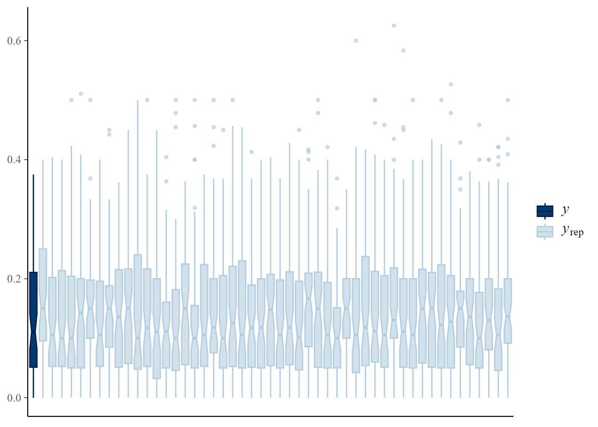
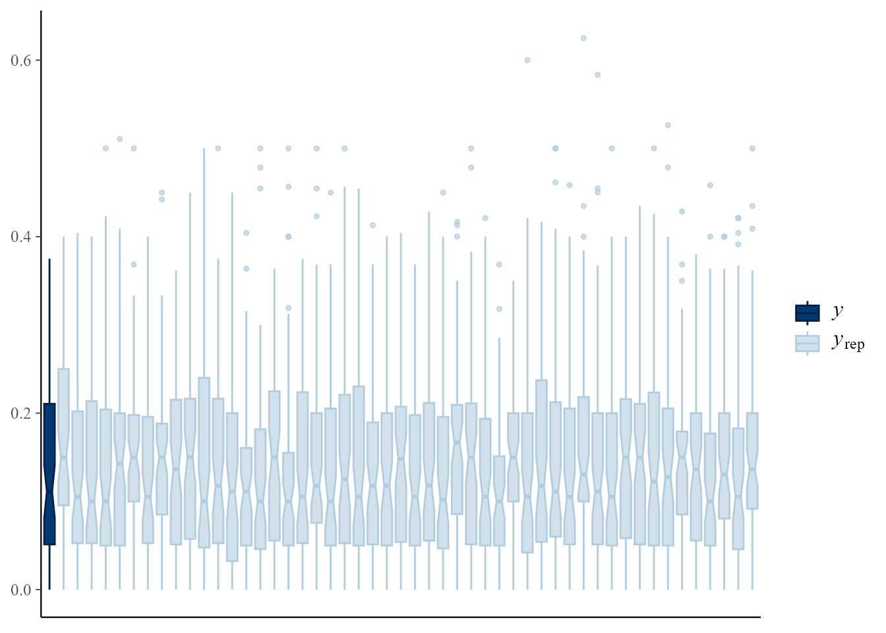

Posterior Predictive Checking
Paul J. Northrop
2025-11-18
Source:vignettes/bang-d-ppc-vignette.Rmd
bang-d-ppc-vignette.RmdThis short vignette illustrates the use of the pp_check
method pp_check.hef, which provides an interface to the
posterior predictive checking graphics in the bayesplot package
(Gabry and Mahr 2017). For details see the
bayesplot vignette Graphical posterior
predictive checks. and/or Chapter 6 of Gelman
et al. (2014). bayesplot functions return a
ggplot object that can be customised using the
gglot2 package (Wickham
2016).
We revisit the examples presented in the vignettes Hierarchical 1-way Analysis of
Variance and Conjugate
Hierarchical Models. In the code below hef and
hanova1 have been called with the extra argument
nrep = 50. This results in 50 simulated replicates of the
data, returned in object$data_rep, on which posterior
predictive checking can be based. The general idea is that if the model
fits well then the observed data should not appear unusual when compared
to replicates from the posterior predictive distribution.
library(bang)
# Beta-binomial rat tumor example
rat_res <- hef(model = "beta_binom", data = rat, nrep = 50)
# Gamma-Poisson pump failure example
pump_res <- hef(model = "gamma_pois", data = pump, nrep = 50)
# 1-way Hierarchical ANOVA global warming example
RCP26_2 <- temp2[temp2$RCP == "rcp26", ]
temp_res <- hanova1(resp = RCP26_2[, 1], fac = RCP26_2[, 2], nrep = 50)We show some examples of the graphical posterior predictive checks
that are available from bayesplot, but make no comments on
their content. The commented lines above the calls to
pp_check describe briefly the type of plot produced.
Beta-binomial model
The aspect of the data that appears in these plots is the proportion of successful trials.
library(bayesplot)
#> This is bayesplot version 1.14.0
#> - Online documentation and vignettes at mc-stan.org/bayesplot
#> - bayesplot theme set to bayesplot::theme_default()
#> * Does _not_ affect other ggplot2 plots
#> * See ?bayesplot_theme_set for details on theme setting
library(ggplot2)
# Overlaid density estimates
pp_check(rat_res)
# Overlaid distribution function estimates
pp_check(rat_res, fun = "ecdf_overlay")

# Multiple histograms
pp_check(rat_res, fun = "hist", nrep = 8)
#> `stat_bin()` using `bins = 30`. Pick better value `binwidth`.
# Multiple boxplots
pp_check(rat_res, fun = "boxplot") 

# Predictive medians vs observed median
pp_check(rat_res, fun = "stat", stat = "median")
#> `stat_bin()` using `bins = 30`. Pick better value `binwidth`.
# Predictive (mean, sd) vs observed (mean, sd)
pp_check(rat_res, fun = "stat_2d", stat = c("mean", "sd"))
#> Note: in most cases the default test statistic 'mean' is too weak to detect anything of interest.

Gamma-Poisson model
The aspect of the data that appears in these plots is the exposure-adjusted rate \(y_j / e_j\), where \(y_j\) is the observed count and \(e_j\) a measure of exposure. See the Conjugate Hierarchical Models vignette for more detail.
# Overlaid density estimates
pp_check(pump_res)
# Predictive (mean, sd) vs observed (mean, sd)
pp_check(pump_res, fun = "stat_2d", stat = c("mean", "sd"))
#> Note: in most cases the default test statistic 'mean' is too weak to detect anything of interest.

One-way Hierarchical ANOVA
The raw responses appear in these plots.
# Overlaid density estimates
pp_check(temp_res)
# Predictive (mean, sd) vs observed (mean, sd)
pp_check(temp_res, fun = "stat_2d", stat = c("mean", "sd"))
#> Note: in most cases the default test statistic 'mean' is too weak to detect anything of interest.